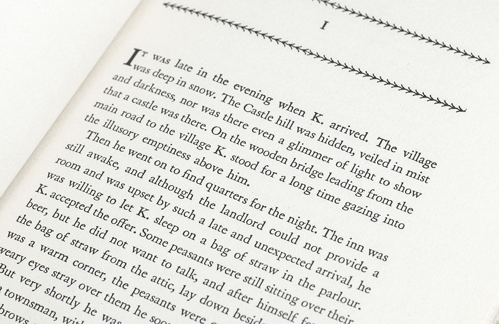

The Castle
Kafka's last great, unfinished novel - the book that hangs over the whole modern era like a nightmare
The Castle is the story of K., the unwanted Land Surveyor who is never to be admitted to the Castle nor accepted in the village, and yet cannot go home. As he encounters dualities of certainty and doubt, hope and fear, and reason and nonsense, K.'s struggles in the absurd, labyrinthine world where he finds himself seem to reveal an inexplicable truth about the nature of existence. Kafka began The Castle in 1922 and it was never finished, yet this, the last of his three great novels, draws fascinating conclusions that make it feel strangely complete.
Categories:
- Short stories
- Anthologies
- Translated works
- Humour
clik this link to know more about it
Characters
- 'K'
- Frieda
- Innkeeper's Wife.
- Mayor
- Burgel
- Mizzi
- Momus
- Uniformed Man
- Landlord
- Olga
- Barnabas
- Gerstäcker
- Arthur
- Jeremiah
- Erlanger
- Innkeeper
- Amalia